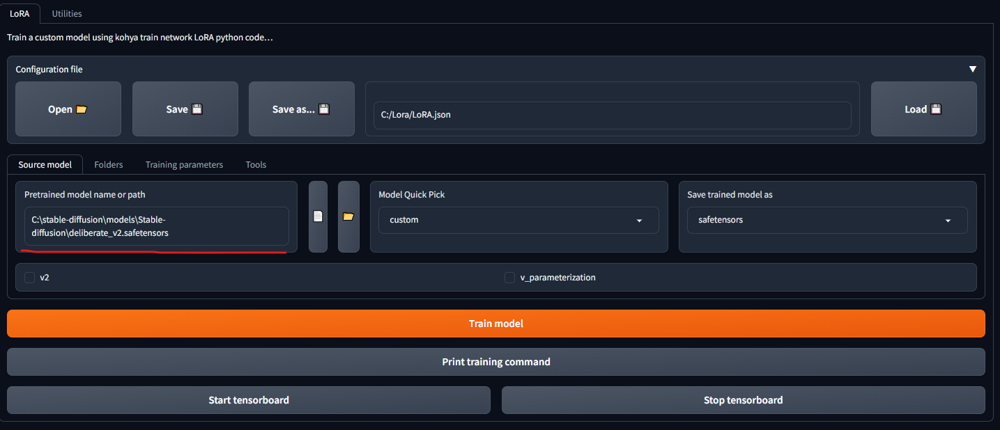
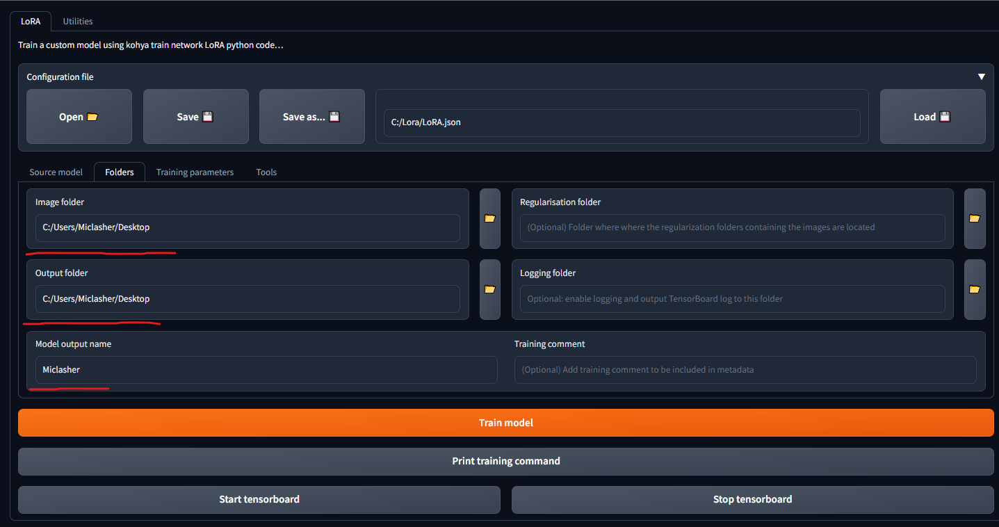
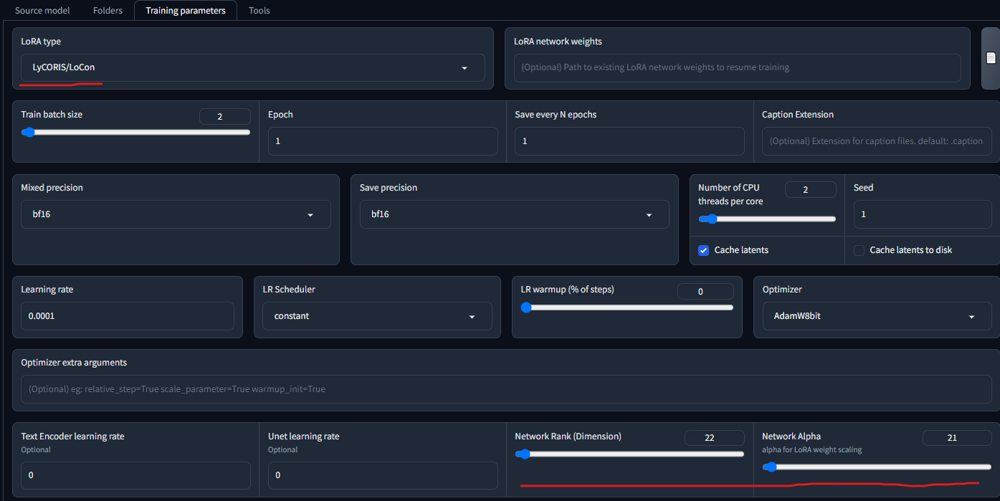

Instructions for Users with Good PCs
Step 1: Download portable Kohya's webui by serpotapov (You can find tutorial in its repo)
Step 2: Open webui using lora-only-webui.bat
Step 3: Use this config file but you need to change some settings:
Download deliberate model (or SD 1.5) and set path to safetensors/ckpt file

Set here path to your desktop and name of your LoRA/LyCORIS

Set your file type and Network Rank/Alpha (They need to be equal). The affect your end file size
(size = network rank * 1.125)
Also you need to set mixed precision and save precision to f16 if your GPU is not NVIDIA RTX 20XX/30XX/40XX

Step 4: Press orange train button
Step 5: Imidiately detete samplers folder from your desktop
Step 6: After finishing training process LoRA/LyCORIS will apear on your desktop